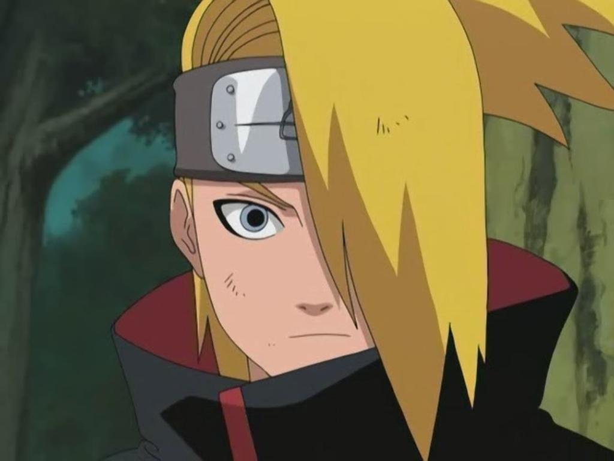

Inicio:
Deidara (デイダラ, Deidara) fue un artista explosivo de Iwagakure y miembro de Akatsuki. Llevaba el anillo "Azul" (青, Sei) en el índice derecho. Consideraba sus explosiones como la máxima expresión del arte y buscaba demostrar su superioridad sobre todos los demás artistas.
Historia:
Deidara provenía de Iwagakure (Aldea de la Roca) y fue reclutado por Itachi Uchiha tras ser derrotado por él. Aunque inicialmente se unió a Akatsuki por obligación, desarrolló un profundo respeto por la organización y su misión. Durante su tiempo en Akatsuki, Deidara participó en la captura de varias bestias con cola, incluyendo al Shukaku de Gaara.

Deidara murió en batalla contra Sasuke Uchiha, sacrificándose en una explosión final para demostrar la superioridad de su arte. Aunque Sasuke sobrevivió, la explosión de Deidara dejó una marca imborrable en el campo de batalla.

Habilidades:
Deidara utilizaba arcilla explosiva para crear figuras que detonaba a voluntad, causando explosiones de diferentes magnitudes. Su técnica más poderosa, el C4 Karura, creaba explosiones a nivel celular, destruyendo a sus enemigos desde adentro. Además, Deidara podía usar su ojo especial para contrarrestar genjutsu y mejorar su precisión.